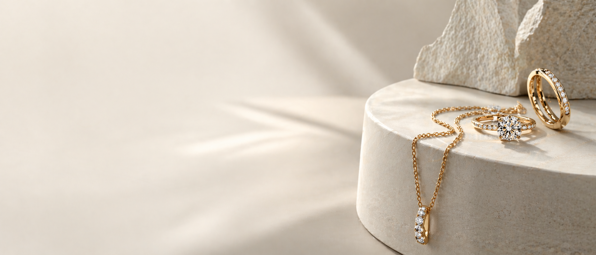
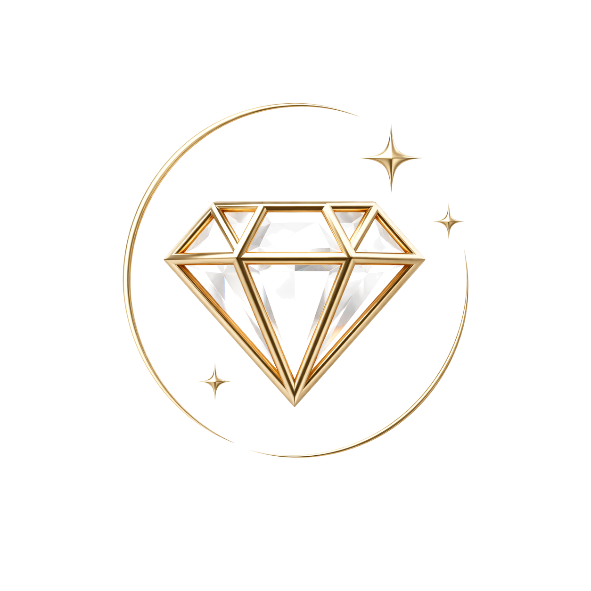

Trauringe
Gemeinsam ausgewählt, sorgfältig angepasst. Klassisch, modern oder ganz individuell gefertigt — jedes Paar ein eigenes Stück.

Juwelier Cetin · Dillenburg seit 2007
Trauringe, Verlobungsringe und Feinschmuck — in Ruhe ausgewählt, sorgfältig angepasst, persönlich übergeben. Ein Familienhaus, das weiß, was ein Moment wert ist.
Dillenburg · seit 2007
Seit bald zwei Jahrzehnten bewahrt unser Haus in Dillenburg eine seltene Haltung: Wir lassen Schmuck nicht aus dem Katalog fallen. Wir hören zu, wir wählen aus, wir beraten ohne Eile.
Edle Metalle, sorgfältig gewählte Steine und Stücke, die eine Geschichte tragen — das ist unser Maßstab. Für den ersten gemeinsamen Ring. Für den Moment, in dem es gesagt werden soll.
Leistungen
Gemeinsam ausgewählt, sorgfältig angepasst. Klassisch, modern oder ganz individuell gefertigt — jedes Paar ein eigenes Stück.
Der Moment verdient das Richtige. Wir helfen, die Idee in Fassung, Stein und Form zu übersetzen — ruhig, diskret, mit Gefühl.
Ringe, Ketten, Anhänger, Ohrringe und Armbänder in Gold, Weißgold und Platin — für jeden Tag und für die besonderen.
Ohne Verkaufsdruck. Wir erklären Qualität, Herkunft und Wert — und finden mit Ihnen ein Stück, das dauerhaft trägt.
Größenänderung, Reinigung, Reparatur, Umarbeitung. Auch für Stücke, die nicht aus unserem Haus stammen.
Einzelanfertigungen und ausgewählte Raritäten — für Sammler, Liebhaber und alle, die über den Katalog hinausblicken.
Ankauf
Wer verkauft, möchte verstehen. Wir prüfen vor Ihren Augen, erklären jede Position und machen ein Angebot, das Bestand hat — seit zwei Jahrzehnten ein Grund, warum Kunden wiederkommen.

Der Stein
Carat, Colour, Clarity, Cut — die vier C sind uns vertraut. Wir wählen nicht den lautesten Stein, sondern den, der zu Ihnen passt. Lupenrein, ruhig, mit Leben.
Stimmen
„Ich wurde selten so liebenswürdig und kompetent beraten. Meine Wünsche wurden angehört — und umgesetzt."
„Ein korrekter, sehr kundenorientierter Juwelier. Habe zum zweiten Mal Edelmetalle ankaufen lassen — kann ich sehr weiterempfehlen."
„Juwelier meines Vertrauens. Da kann man hingehen, wenn man was braucht — weil man sich einfach sicher fühlt."
„Hervorragende Beratung, faire Preise — perfekt. Ein warmherziger Familienbetrieb mit Tradition."
Besuch
Ein Gespräch braucht Zeit. Kommen Sie vorbei, rufen Sie an oder schreiben Sie uns — wir nehmen uns Ihrer Wünsche in Ruhe an.